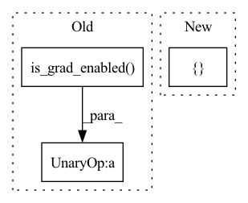

Pattern ID :1268

Before Change
_attn_chunk_size: Optional[int] = None,
_offload_inference: bool = False,
) -> Tuple[torch.Tensor, torch.Tensor]:
inplace_safe = not (self.training or torch.is_grad_enabled())
if(_attn_chunk_size is None):
_attn_chunk_size = chunk_size
After Change
input_tensors = _offloadable_inputs
del _offloadable_inputs
else:
input_tensors = [m, z]
m, z = input_tensors
In pattern: SUPERPATTERN
Frequency: 3
Non-data size: 3
Instances
Fragment ID: 3735069
Project Name: aqlaboratory/openfold
Commit Name: 143ba486c3929d5a601fe373b05be4f0ee5e0f86
Time: 2022-06-21
Author: gahdritz@gmail.com
File Name: openfold/model/evoformer.py
M Class Name: EvoformerBlock
N Class Name: EvoformerBlock
M Method Name: forward(12)
N Method Name: forward(9)
M Parent Class: nn.Module
N Parent Class: nn.Module
M File Name: openfold/model/evoformer.py
N File Name: openfold/model/evoformer.py
M Start Line: 358
M End Line: 417
N Start Line: 358
N End Line: 420
'>
Before Change
]
blocks_per_ckpt = self.blocks_per_ckpt
if(not torch.is_grad_enabled()):
blocks_per_ckpt = None
m, z = checkpoint_blocks(
After Change
[*, N_res, C_s] single embedding (or None if extra MSA stack)
return self._forward_list(
[m, z],
msa_mask=msa_mask,
pair_mask=pair_mask,
chunk_size=chunk_size,
'>
Fragment ID: 3735070
Project Name: aqlaboratory/openfold
Commit Name: fe9ad07eb2daaee380f0158079e908254267cca2
Time: 2022-06-20
Author: gahdritz@gmail.com
File Name: openfold/model/evoformer.py
M Class Name: EvoformerStack
N Class Name: EvoformerStack
M Method Name: forward(8)
N Method Name: forward(8)
M Parent Class: nn.Module
N Parent Class: nn.Module
M File Name: openfold/model/evoformer.py
N File Name: openfold/model/evoformer.py
M Start Line: 629
M End Line: 675
N Start Line: 741
N End Line: 748
'>
Before Change
_attn_chunk_size = chunk_size
m, z = input_tensors
inplace_safe = not (self.training or torch.is_grad_enabled())
// If function calls could speak...
m = add(m,
self.msa_dropout_layer(
After Change
)
if(not inplace_safe):
input_tensors = [m, z]
del m, z
'>
Fragment ID: 3735071
Project Name: aqlaboratory/openfold
Commit Name: 143ba486c3929d5a601fe373b05be4f0ee5e0f86
Time: 2022-06-21
Author: gahdritz@gmail.com
File Name: openfold/model/evoformer.py
M Class Name: ExtraMSABlock
N Class Name: ExtraMSABlock
M Method Name: forward(12)
N Method Name: forward(9)
M Parent Class: nn.Module
N Parent Class: nn.Module
M File Name: openfold/model/evoformer.py
N File Name: openfold/model/evoformer.py
M Start Line: 480
M End Line: 493
N Start Line: 483
N End Line: 525